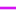

<!doctype html>
<html lang="en">
    <head>
        <meta charset="utf-8">
        <meta http-equiv="X-UA-Compatible" content="IE=edge">
        <meta name="viewport" content="initial-scale=1,user-scalable=no,maximum-scale=1,width=device-width">
        <meta name="mobile-web-app-capable" content="yes">
        <meta name="apple-mobile-web-app-capable" content="yes">
        <link rel="stylesheet" href="css/leaflet.css"><link rel="stylesheet" href="css/L.Control.Locate.min.css">
        <link rel="stylesheet" href="css/qgis2web.css"><link rel="stylesheet" href="css/fontawesome-all.min.css">
        <link rel="stylesheet" href="css/leaflet-control-geocoder.Geocoder.css">
        <link rel="stylesheet" href="css/leaflet-measure.css">
        <style>
        html, body, #map {
            width: 100%;
            height: 100%;
            padding: 0;
            margin: 0;
        }
        </style>
        <title></title>
    </head>
    <body>
        <div id="map">
        </div>
        <script src="js/qgis2web_expressions.js"></script>
        <script src="js/leaflet.js"></script><script src="js/L.Control.Locate.min.js"></script>
        <script src="js/leaflet.rotatedMarker.js"></script>
        <script src="js/leaflet.pattern.js"></script>
        <script src="js/leaflet-hash.js"></script>
        <script src="js/Autolinker.min.js"></script>
        <script src="js/rbush.min.js"></script>
        <script src="js/labelgun.min.js"></script>
        <script src="js/labels.js"></script>
        <script src="js/leaflet-control-geocoder.Geocoder.js"></script>
        <script src="js/leaflet-measure.js"></script>
        <script src="data/Road_2.js"></script>
        <script src="data/Demo_3.js"></script>
        <script>
        var map = L.map('map', {
            zoomControl:true, maxZoom:28, minZoom:1
        }).fitBounds([[6.45418220542381,3.4268356299741094],[6.457658047638184,3.432628501938091]]);
        var hash = new L.Hash(map);
        map.attributionControl.setPrefix('<a href="https://github.com/tomchadwin/qgis2web" target="_blank">qgis2web</a> &middot; <a href="https://leafletjs.com" title="A JS library for interactive maps">Leaflet</a> &middot; <a href="https://qgis.org">QGIS</a>');
        var autolinker = new Autolinker({truncate: {length: 30, location: 'smart'}});
        L.control.locate({locateOptions: {maxZoom: 19}}).addTo(map);
        var measureControl = new L.Control.Measure({
            position: 'topleft',
            primaryLengthUnit: 'meters',
            secondaryLengthUnit: 'kilometers',
            primaryAreaUnit: 'sqmeters',
            secondaryAreaUnit: 'hectares'
        });
        measureControl.addTo(map);
        document.getElementsByClassName('leaflet-control-measure-toggle')[0]
        .innerHTML = '';
        document.getElementsByClassName('leaflet-control-measure-toggle')[0]
        .className += ' fas fa-ruler';
        var bounds_group = new L.featureGroup([]);
        function setBounds() {
        }
        map.createPane('pane_GoogleSatellite_0');
        map.getPane('pane_GoogleSatellite_0').style.zIndex = 400;
        var layer_GoogleSatellite_0 = L.tileLayer('http://www.google.cn/maps/vt?lyrs=s@189&gl=cn&x={x}&y={y}&z={z}', {
            pane: 'pane_GoogleSatellite_0',
            opacity: 1.0,
            attribution: '',
            minZoom: 1,
            maxZoom: 28,
            minNativeZoom: 0,
            maxNativeZoom: 18
        });
        layer_GoogleSatellite_0;
        map.addLayer(layer_GoogleSatellite_0);
        map.createPane('pane_GoogleRoads_1');
        map.getPane('pane_GoogleRoads_1').style.zIndex = 401;
        var layer_GoogleRoads_1 = L.tileLayer('https://mt1.google.com/vt/lyrs=h&x={x}&y={y}&z={z}', {
            pane: 'pane_GoogleRoads_1',
            opacity: 1.0,
            attribution: '',
            minZoom: 1,
            maxZoom: 28,
            minNativeZoom: 0,
            maxNativeZoom: 18
        });
        layer_GoogleRoads_1;
        map.addLayer(layer_GoogleRoads_1);
        function pop_Road_2(feature, layer) {
            var popupContent = '<table>\
                    <tr>\
                        <th scope="row">name</th>\
                        <td>' + (feature.properties['name'] !== null ? autolinker.link(feature.properties['name'].toLocaleString()) : '') + '</td>\
                    </tr>\
                </table>';
            layer.bindPopup(popupContent, {maxHeight: 400});
        }

        function style_Road_2_0() {
            return {
                pane: 'pane_Road_2',
                opacity: 1,
                color: 'rgba(214,20,243,1.0)',
                dashArray: '',
                lineCap: 'square',
                lineJoin: 'bevel',
                weight: 2.0,
                fillOpacity: 0,
                interactive: true,
            }
        }
        map.createPane('pane_Road_2');
        map.getPane('pane_Road_2').style.zIndex = 402;
        map.getPane('pane_Road_2').style['mix-blend-mode'] = 'normal';
        var layer_Road_2 = new L.geoJson(json_Road_2, {
            attribution: '',
            interactive: true,
            dataVar: 'json_Road_2',
            layerName: 'layer_Road_2',
            pane: 'pane_Road_2',
            onEachFeature: pop_Road_2,
            style: style_Road_2_0,
        });
        bounds_group.addLayer(layer_Road_2);
        map.addLayer(layer_Road_2);
        function pop_Demo_3(feature, layer) {
            var popupContent = '<table>\
                    <tr>\
                        <th scope="row">Title</th>\
                        <td>' + (feature.properties['Title'] !== null ? autolinker.link(feature.properties['Title'].toLocaleString()) : '') + '</td>\
                    </tr>\
                </table>';
            layer.bindPopup(popupContent, {maxHeight: 400});
        }

        function style_Demo_3_0() {
            return {
                pane: 'pane_Demo_3',
                opacity: 1,
                color: 'rgba(228,26,28,1.0)',
                dashArray: '',
                lineCap: 'square',
                lineJoin: 'bevel',
                weight: 4.0,
                fillOpacity: 0,
                interactive: true,
            }
        }
        map.createPane('pane_Demo_3');
        map.getPane('pane_Demo_3').style.zIndex = 403;
        map.getPane('pane_Demo_3').style['mix-blend-mode'] = 'normal';
        var layer_Demo_3 = new L.geoJson(json_Demo_3, {
            attribution: '',
            interactive: true,
            dataVar: 'json_Demo_3',
            layerName: 'layer_Demo_3',
            pane: 'pane_Demo_3',
            onEachFeature: pop_Demo_3,
            style: style_Demo_3_0,
        });
        bounds_group.addLayer(layer_Demo_3);
        map.addLayer(layer_Demo_3);
        var osmGeocoder = new L.Control.Geocoder({
            collapsed: true,
            position: 'topleft',
            text: 'Search',
            title: 'Testing'
        }).addTo(map);
        document.getElementsByClassName('leaflet-control-geocoder-icon')[0]
        .className += ' fa fa-search';
        document.getElementsByClassName('leaflet-control-geocoder-icon')[0]
        .title += 'Search for a place';
        var baseMaps = {};
        L.control.layers(baseMaps,{' Demo': layer_Demo_3,' Road': layer_Road_2,"Google Roads": layer_GoogleRoads_1,"Google Satellite": layer_GoogleSatellite_0,}).addTo(map);
        setBounds();
        </script>
    </body>
</html>
